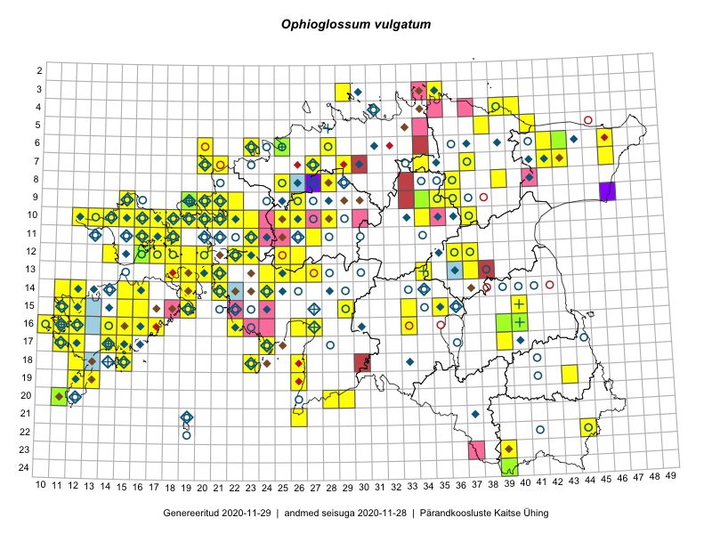

Ophioglossum vulgatum
Uuendatud: 2016-12-08
Kaardile koondatud taksonid: Ophioglossum vulgatum L.

Kaart põhineb 196 kirjel, neist vaatlusi 193 ja eksemplare 3. Taksonit on leitud 80 ruudust.
| Ruut | Vaatleja(d) | Vaatlusaeg | Kirje tüüp | Viide andmebaasikirjele |
|---|---|---|---|---|
| 09-15 | Peedu Saar, Toomas Kukk | 2015-05-27 | ruut/ala | vaata PlutoFis |
| 09-15 | Peedu Saar, Toomas Kukk | 2015-05-27 | punkt | vaata PlutoFis |
| 17-14 | Toomas Kukk | 2015-08-05 | punkt | vaata PlutoFis |
| 17-14 | Toomas Kukk, Peedu Saar, Kersti Tambets, Sten Mander, Janika Sammasto | 2015-08-05 | ruut/ala | vaata PlutoFis |
| 16-11 | Toomas Kukk, Peedu Saar, Kersti Tambets | 2015-08-06 | punkt | vaata PlutoFis |
| 10-17 | Peedu Saar, Toomas Kukk | 2015-05-26 | ruut/ala | vaata PlutoFis |
| 10-17 | Peedu Saar, Toomas Kukk | 2015-05-26 | punkt | vaata PlutoFis |
| 07-46 | Peedu Saar, Liina Oja | 2015-07-23 | punkt | vaata PlutoFis |
| 10-34 | Peedu Saar, Liina Oja | 2015-06-08 | punkt | vaata PlutoFis |
| 15-29 | Peedu Saar, Liina Oja | 2015-06-11 | punkt | vaata PlutoFis |
| 12-36 | Peedu Saar, Liina Oja | 2015-06-12 | punkt | vaata PlutoFis |
| 17-39 | Peedu Saar, Thea Kull | 2015-06-17 | punkt | vaata PlutoFis |
| 12-20 | Ott Luuk | 2014-07-24 | ruut/ala | vaata PlutoFis |
| 12-22 | Ott Luuk, Jaak-Albert Metsoja | 2015-05-27 | ruut/ala | vaata PlutoFis |
| 10-34 | Peedu Saar, Liina Oja | 2015-06-08 | ruut/ala | vaata PlutoFis |
| 09-15 | Toomas Kukk, Eerik Leibak | 2015-08-11 | ruut/ala | vaata PlutoFis |
| 09-15 | Toomas Kukk, Eerik Leibak | 2015-08-11 | punkt | vaata PlutoFis |
| 15-29 | Peedu Saar, Liina Oja | 2015-06-11 | ruut/ala | vaata PlutoFis |
| 12-36 | Peedu Saar, Liina Oja | 2015-06-12 | ruut/ala | vaata PlutoFis |
| 10-17 | Toomas Kukk, Peedu Saar | 2015-05-26 | punkt | vaata PlutoFis |
| 14-16 | Toomas Kukk, Thea Kull, Ott Luuk, Peedu Saar | 2014-06-27 | ruut/ala | vaata PlutoFis |
| 17-39 | Thea Kull, Peedu Saar | 2015-06-17 | ruut/ala | vaata PlutoFis |
| 13-20 | Meeli Mesipuu | 2015-07-13 | ruut/ala | vaata PlutoFis |
| 13-20 | Meeli Mesipuu | 2015-07-13 | punkt | vaata PlutoFis |
| 18-23 | Ott Luuk, Elle Roosaluste | 2015-05-29 | ruut/ala | vaata PlutoFis |
| 07-34 | Jana-Maria Habicht, Ester Valdvee | 2015-06-27 | ruut/ala | vaata PlutoFis |
| 18-23 | Ott Luuk | 2015-05-30 | punkt | vaata PlutoFis |
| 13-25 | Indrek Tammekänd, Katrin Aavik | 2015-06-15 | ruut/ala | vaata PlutoFis |
| 09-34 | Jana-Maria Habicht, Ester Valdvee, Kirke Pilvik | 2015-07-25 | ruut/ala | vaata PlutoFis |
| 09-35 | Jana-Maria Habicht, Ester Valdvee, Kirke Pilvik, Anu Nurk | 2015-07-30 | ruut/ala | vaata PlutoFis |
| 20-28 | Ott Luuk, Eerik Leibak, Liisa Rennel | 2015-05-20 | ruut/ala | vaata PlutoFis |
| 20-28 | Ott Luuk, Eerik Leibak, Liisa Rennel | 2015-05-20 | punkt | vaata PlutoFis |
| 07-43 | Meeli Mesipuu, Timo Luhamäe | 2015-07-22 | ruut/ala | vaata PlutoFis |
| 16-26 | Meeli Mesipuu | 2015-07-18 | ruut/ala | vaata PlutoFis |
| 16-26 | Meeli Mesipuu | 2015-07-18 | punkt | vaata PlutoFis |
| 11-17 | Eeva-Maria Jeletsky, Tarmo Niitla | 2015-06-20 | punkt | vaata PlutoFis |
| 11-17 | Eeva-Maria Jeletsky, Tarmo Niitla | 2015-06-20 | punkt | vaata PlutoFis |
| 11-17 | Eeva-Maria Jeletsky, Tarmo Niitla | 2015-06-20 | punkt | vaata PlutoFis |
| 11-17 | Eeva-Maria Jeletsky, Tarmo Niitla | 2015-06-20 | ruut/ala | vaata PlutoFis |
| 12-16 | Eeva-Maria Jeletsky, Tarmo Niitla | 2015-06-21 | punkt | vaata PlutoFis |
| 12-16 | Eeva-Maria Jeletsky, Tarmo Niitla | 2015-06-21 | punkt | vaata PlutoFis |
| 12-16 | Eeva-Maria Jeletsky, Tarmo Niitla | 2015-06-21 | punkt | vaata PlutoFis |
| 12-16 | Eeva-Maria Jeletsky, Tarmo Niitla | 2015-06-21 | punkt | vaata PlutoFis |
| 12-17 | Eeva-Maria Jeletsky, Tarmo Niitla | 2015-06-21 | punkt | vaata PlutoFis |
| 12-17 | Eeva-Maria Jeletsky, Tarmo Niitla | 2015-06-21 | punkt | vaata PlutoFis |
| 12-17 | Eeva-Maria Jeletsky, Tarmo Niitla | 2015-06-21 | ruut/ala | vaata PlutoFis |
| 07-34 | Jana-Maria Habicht, Ester Valdvee | 2015-06-27 | punkt | vaata PlutoFis |
| 16-33 | Maria Abakumova | 2015-06-21 | ruut/ala | vaata PlutoFis |
| 15-11 | Triin Reitalu, Mari Reitalu | 2015-06-29 | ruut/ala | vaata PlutoFis |
| 15-11 | Triin Reitalu, Mari Reitalu | 2015-06-29 | punkt | vaata PlutoFis |
| 16-11 | Mari Reitalu | 2015-05-22 | ruut/ala | vaata PlutoFis |
| 17-24 | Maret Gerz, Leena Gerz | 2015-08-12 | ruut/ala | vaata PlutoFis |
| 17-24 | Maret Gerz, Leena Gerz | 2015-08-12 | punkt | vaata PlutoFis |
| 17-24 | Maret Gerz, Leena Gerz | 2015-08-12 | punkt | vaata PlutoFis |
| 17-24 | Maret Gerz, Leena Gerz | 2015-08-12 | punkt | vaata PlutoFis |
| 16-11 | Mari Reitalu | 2015-06-22 | punkt | vaata PlutoFis |
| 09-34 | Jana-Maria Habicht, Ester Valdvee, Kirke Pilvik | 2015-07-26 | punkt | vaata PlutoFis |
| 17-12 | Mari Reitalu | 2015-07-01 | ruut/ala | vaata PlutoFis |
| 17-12 | Mari Reitalu | 2015-06-19 | ruut/ala | vaata PlutoFis |
| 17-12 | Mari Reitalu | 2015-06-19 | punkt | vaata PlutoFis |
| 12-37 | Ülle Jõgar, Illi Tarmu, K. Rünk | 2015-07-23 | ruut/ala | vaata PlutoFis |
| 14-19 | Meeli Mesipuu | 2015-06-20 | ruut/ala | vaata PlutoFis |
| 14-19 | Meeli Mesipuu | 2015-06-20 | punkt | vaata PlutoFis |
| 19-12 | Oliver Parrest | 2015-08-18 | ruut/ala | vaata PlutoFis |
| 16-12 | Mari Reitalu | 2015-06-10 | ruut/ala | vaata PlutoFis |
| 17-12 | Mari Reitalu | 2015-06-26 | ruut/ala | vaata PlutoFis |
| 17-12 | Mari Reitalu | 2015-06-26 | punkt | vaata PlutoFis |
| 13-18 | Meeli Mesipuu, Kadri Tali | 2015-06-25 | ruut/ala | vaata PlutoFis |
| 17-15 | Sirje Azarov, Aira Alasi | 2015-05-05 | ruut/ala | vaata PlutoFis |
| 17-15 | Sirje Azarov, Aira Alasi | 2015-06-12 | punkt | vaata PlutoFis |
| 18-12 | Mari Reitalu, Sirje Azarov, Oliver Parrest | 2015-08-02 | ruut/ala | vaata PlutoFis |
| 20-11 | Mari Reitalu, Oliver Parrest | 2015-05-26 | ruut/ala | vaata PlutoFis |
| 14-12 | Mari Reitalu, Oliver Parrest | 2015-07-14 | ruut/ala | vaata PlutoFis |
| 14-16 | Mari Reitalu, Sirje Azarov | 2015-05-09 | ruut/ala | vaata PlutoFis |
| 14-16 | Mari Reitalu, Sirje Azarov | 2015-05-09 | punkt | vaata PlutoFis |
| 16-33 | Maria Abakumova | 2015-06-21 | punkt | vaata PlutoFis |
| 16-11 | Mari Reitalu, Triin Reitalu | 2015-05-28 | ruut/ala | vaata PlutoFis |
| 06-43 | Thea Kull, Meeli Mesipuu, Eerik Leibak | 2014-07-09 | ruut/ala | vaata PlutoFis |
| 16-10 | Sirje Azarov, Mari Reitalu | 2015-05-22 | ruut/ala | vaata PlutoFis |
| 17-11 | Mari Reitalu, Triin Reitalu | 2015-05-19 | ruut/ala | vaata PlutoFis |
| 16-10 | Sirje Azarov, Mari Reitalu | 2015-06-07 | punkt | vaata PlutoFis |
| 16-11 | Sirje Azarov, Mari Reitalu | 2015-05-23 | ruut/ala | vaata PlutoFis |
| 16-11 | Sirje Azarov, Mari Reitalu | 2015-05-23 | punkt | vaata PlutoFis |
| 16-12 | Mari Reitalu | 2015-07-08 | ruut/ala | vaata PlutoFis |
| 13-27 | Mari Metsoja, Jaak-Albert Metsoja | 2015-06-10 | ruut/ala | vaata PlutoFis |
| 16-27 | Meeli Mesipuu | 2015-06-17 | ruut/ala | vaata PlutoFis |
| 16-27 | Meeli Mesipuu | 2015-06-17 | punkt | vaata PlutoFis |
| 16-27 | Meeli Mesipuu | 2015-06-17 | punkt | vaata PlutoFis |
| 12-25 | Aat Sarv | 2015-05-27 | ruut/ala | vaata PlutoFis |
| 10-26 | Aat Sarv | 2015-05-31 | ruut/ala | vaata PlutoFis |
| 07-42 | Mari Metsoja, Jaak-Albert Metsoja | 2015-07-23 | ruut/ala | vaata PlutoFis |
| 10-18 | Meeli Mesipuu, Timo Luhamäe | 2015-05-26 | ruut/ala | vaata PlutoFis |
| 11-18 | Meeli Mesipuu, Timo Luhamäe | 2015-05-26 | ruut/ala | vaata PlutoFis |
| 11-16 | Meeli Mesipuu, Timo Luhamäe | 2015-05-28 | ruut/ala | vaata PlutoFis |
| 15-15 | Karin Kikas, Elle Rajandu | 2015-07-23 | ruut/ala | vaata PlutoFis |
| 12-16 | Meeli Mesipuu, Timo Luhamäe | 2015-05-28 | ruut/ala | vaata PlutoFis |
| 19-26 | Meeli Mesipuu | 2015-05-20 | ruut/ala | vaata PlutoFis |
| 19-26 | Meeli Mesipuu | 2015-05-20 | punkt | vaata PlutoFis |
| 15-16 | Karin Kikas, Elle Rajandu | 2015-07-23 | punkt | vaata PlutoFis |
| 15-15 | Karin Kikas, Elle Rajandu | 2015-07-23 | punkt | vaata PlutoFis |
| 07-46 | Eerik Leibak, Uudo Timm | 2015-07-09 | ruut/ala | vaata PlutoFis |
| 07-46 | Eerik Leibak, Uudo Timm | 2015-07-09 | punkt | vaata PlutoFis |
| 05-41 | Kaili Orav, Silvia Pihu | 2015-06-18 | ruut/ala | vaata PlutoFis |
| 05-41 | Kaili Orav, Silvia Pihu | 2015-06-18 | punkt | vaata PlutoFis |
| 13-20 | Kadri Tali | 2015-06-05 | ruut/ala | vaata PlutoFis |
| 11-18 | Meeli Mesipuu, Timo Luhamäe | 2016-05-28 | punkt | vaata PlutoFis |
| 10-18 | Meeli Mesipuu, Timo Luhamäe | 2015-05-26 | punkt | vaata PlutoFis |
| 09-35 | Ulvi Selgis | 2014-06-10 | punkt | vaata PlutoFis |
| 12-37 | Ülle Jõgar, Illi Tarmu, Kai Rünk | 2015-07-23 | punkt | vaata PlutoFis |
| 12-37 | Ülle Jõgar, Illi Tarmu, Kai Rünk | 2015-07-23 | punkt | vaata PlutoFis |
| 16-12 | Triin Reitalu, Mari Reitalu | 2015-07-08 | punkt | vaata PlutoFis |
| 16-11 | Triin Reitalu, Mari Reitalu | 2015-05-28 | punkt | vaata PlutoFis |
| 16-40 | Maret Gerz, Ott Luuk | 2014-06-25 | ruut/ala | vaata PlutoFis |
| 24-39 | Meeli Mesipuu, Thea Kull, Eerik Leibak | 2014-06-09 | ruut/ala | vaata PlutoFis |
| 24-39 | Meeli Mesipuu, Thea Kull, Eerik Leibak | 2014-06-09 | punkt | vaata PlutoFis |
| 09-26 | Peedu Saar, Kersti Püssa, Rein Kalamees, Toomas Kukk | 2014-06-11 | ruut/ala | vaata PlutoFis |
| 09-26 | Thea Kull, Meeli Mesipuu, Eerik Leibak | 2014-06-11 | ruut/ala | vaata PlutoFis |
| 10-26 | Thea Kull, Meeli Mesipuu | 2014-06-12 | ruut/ala | vaata PlutoFis |
| 10-25 | Ott Luuk, Jaak-Albert Metsoja, Maret Gerz | 2014-06-11 | ruut/ala | vaata PlutoFis |
| 10-26 | Jaak-Albert Metsoja, Ott Luuk, Maret Gerz | 2014-06-11 | ruut/ala | vaata PlutoFis |
| 19-12 | Ott Luuk, Mari Reitalu, Thea Kull | 2014-05-23 | ruut/ala | vaata PlutoFis |
| 20-11 | Oliver Parrest, Mari Reitalu | 2015-05-26 | punkt | vaata PlutoFis |
| 14-12 | Oliver Parrest, Mari Reitalu | 2015-07-14 | punkt | vaata PlutoFis |
| 18-12 | Oliver Parrest, Mari Reitalu, Sirje Azarov | 2015-08-02 | punkt | vaata PlutoFis |
| 09-35 | Jana-Maria Habicht, Ester Valdvee, Kirke Pilvik, Anu Nurk | 2015-07-30 | punkt | vaata PlutoFis |
| 10-22 | Tõnu Ploompuu | 2015-08-21 | ruut/ala | vaata PlutoFis |
| 21-26 | Peedu Saar, Thea Kull | 2016-06-07 | punkt | vaata PlutoFis |
| 21-26 | Thea Kull, Peedu Saar | 2016-06-07 | ruut/ala | vaata PlutoFis |
| 19-43 | Sander Laherand, Ott Luuk | 2016-06-17 | ruut/ala | vaata PlutoFis |
| 14-24 | Thea Kull | 2016-06-21 | ruut/ala | vaata PlutoFis |
| 14-24 | Thea Kull | 2016-06-21 | punkt | vaata PlutoFis |
| 16-15 | Meeli Mesipuu | 2016-06-28 | ruut/ala | vaata PlutoFis |
| 10-18 | Toomas Kukk, Sander Laherand | 2016-07-07 | punkt | vaata PlutoFis |
| 13-26 | Liina Oja, Maret Gerz | 2016-07-08 | punkt | vaata PlutoFis |
| 15-19 | Mari Reitalu, Triin Reitalu | 2016-06-30 | ruut/ala | vaata PlutoFis |
| 14-24 | Thea Kull | 2016-06-21 | punkt | vaata PlutoFis |
| 12-17 | Thea Kull, Sander Laherand | 2016-08-11 | ruut/ala | vaata PlutoFis |
| 13-26 | Maret Gerz, Liina Oja | 2016-07-08 | ruut/ala | vaata PlutoFis |
| 12-17 | Sander Laherand, Thea Kull, Nele Jõessar | 2016-08-11 | punkt | vaata PlutoFis |
| 12-16 | Thea Kull, Sander Laherand | 2016-08-11 | punkt | vaata PlutoFis |
| 12-16 | Sander Laherand, Thea Kull, Nele Jõessar | 2016-08-11 | ruut/ala | vaata PlutoFis |
| 10-16 | Maret Gerz, Meeli Mesipuu | 2016-08-09 | punkt | vaata PlutoFis |
| 08-39 | Liina Oja, Meeli Mesipuu | 2016-07-29 | punkt | vaata PlutoFis |
| 03-35 | Sander Laherand, Ott Luuk, Nele Jõessar | 2016-07-26 | punkt | vaata PlutoFis |
| 08-39 | Meeli Mesipuu, Liina Oja | 2016-07-29 | ruut/ala | vaata PlutoFis |
| 12-14 | Toomas Kukk, Meeli Mesipuu | 2016-08-10 | ruut/ala | vaata PlutoFis |
| 13-25 | Timo Luhamäe, Peedu Saar | 2016-07-05 | punkt | vaata PlutoFis |
| 13-24 | Timo Luhamäe, Peedu Saar | 2016-07-05 | punkt | vaata PlutoFis |
| 19-13 | Sirje Azarov, Mari Reitalu | 2016-07-31 | punkt | vaata PlutoFis |
| 10-20 | Timo Luhamäe, Peedu Saar | 2016-07-07 | punkt | vaata PlutoFis |
| 10-20 | Timo Luhamäe, Peedu Saar | 2016-07-07 | punkt | vaata PlutoFis |
| 09-20 | Timo Luhamäe, Peedu Saar | 2016-07-07 | punkt | vaata PlutoFis |
| 14-19 | Sirje Azarov, Mari Reitalu | 2016-08-18 | punkt | vaata PlutoFis |
| 14-19 | Sirje Azarov, Mari Reitalu | 2016-08-18 | punkt | vaata PlutoFis |
| 12-23 | Mari Reitalu, Oliver Parrest | 2016-07-05 | ruut/ala | vaata PlutoFis |
| 14-19 | Mari Reitalu, Sirje Azarov | 2016-08-18 | ruut/ala | vaata PlutoFis |
| 15-19 | Mari Reitalu, Triin Reitalu | 2016-08-14 | ruut/ala | vaata PlutoFis |
| 19-13 | Mari Reitalu, Sirje Azarov | 2016-07-31 | ruut/ala | vaata PlutoFis |
| 15-19 | Mari Reitalu, Triin Reitalu | 2016-06-30 | punkt | vaata PlutoFis |
| 15-19 | Mari Reitalu, Triin Reitalu | 2016-08-14 | punkt | vaata PlutoFis |
| 08-25 | Helle Mäemets, Tiina Elvisto | 2016-07-05 | ruut/ala | vaata PlutoFis |
| ? | Helle Mäemets, Tiina Elvisto | 2016-07-05 | punkt | vaata PlutoFis |
| 16-16 | Meeli Mesipuu | 2016-09-24 | ruut/ala | vaata PlutoFis |
| 17-12 | Mari Reitalu | 2016-06-12 | punkt | vaata PlutoFis |
| 16-12 | Mari Reitalu, Triin Reitalu | 2016-07-01 | punkt | vaata PlutoFis |
| 15-11 | Meeli Mesipuu, Toomas Kukk, Mari Reitalu | 2016-10-07 | ruut/ala | vaata PlutoFis |
| 13-24 | Peedu Saar, Timo Luhamäe, Johannes Kõdar | 2016-07-05 | ruut/ala | vaata PlutoFis |
| 13-25 | Peedu Saar, Timo Luhamäe, Johannes Kõdar | 2016-07-05 | ruut/ala | vaata PlutoFis |
| 10-20 | Peedu Saar, Timo Luhamäe | 2016-07-07 | ruut/ala | vaata PlutoFis |
| 09-20 | Peedu Saar, Timo Luhamäe | 2016-07-07 | ruut/ala | vaata PlutoFis |
| 03-29 | Kadi-Liis Kesler | 2015-07-20 | ruut/ala | vaata PlutoFis |
| 16-16 | Meeli Mesipuu | 2016-09-24 | punkt | vaata PlutoFis |
| 07-21 | Meeli Mesipuu | 2016-07-07 | ruut/ala | vaata PlutoFis |
| 07-21 | Meeli Mesipuu | 2016-07-07 | punkt | vaata PlutoFis |
| 11-18 | Timo Luhamäe, Meeli Mesipuu | 2015-05-26 | punkt | vaata PlutoFis |
| 11-16 | Timo Luhamäe, Meeli Mesipuu | 2015-05-28 | punkt | vaata PlutoFis |
| 12-16 | Timo Luhamäe, Meeli Mesipuu | 2015-05-28 | punkt | vaata PlutoFis |
| 12-16 | Timo Luhamäe, Meeli Mesipuu | 2015-05-28 | punkt | vaata PlutoFis |
| 16-15 | Meeli Mesipuu | 2016-06-28 | punkt | vaata PlutoFis |
| 16-15 | Meeli Mesipuu | 2016-06-28 | punkt | vaata PlutoFis |
| 11-27 | Meeli Mesipuu | 2016-07-08 | ruut/ala | vaata PlutoFis |
| 11-27 | Meeli Mesipuu | 2016-07-08 | punkt | vaata PlutoFis |
| 10-16 | Meeli Mesipuu, Maret Gerz | 2016-08-09 | ruut/ala | vaata PlutoFis |
| 03-35 | Ott Luuk, Sander Laherand, Nele Jõessar | 2016-07-26 | ruut/ala | vaata PlutoFis |
| 14-21 | Toomas Kukk | 2012-06-25 | ruut/ala | vaata PlutoFis |
| 09-26 | Ott Luuk, Peedu Saar | 2016-09-05 | punkt | vaata PlutoFis |
| 14-21 | Ott Luuk, Peedu Saar | 2016-06-29 | punkt | vaata PlutoFis |
| 19-43 | Ott Luuk, Sander Laherand | 2016-06-17 | punkt | vaata PlutoFis |
| 09-22 | Jaak-Albert Metsoja, Mari Metsoja | 2016-07-06 | ruut/ala | vaata PlutoFis |
| 09-22 | Jaak-Albert Metsoja, Mari Metsoja | 2016-07-06 | punkt | vaata PlutoFis |
| 15-33 | Jaak-Albert Metsoja, Mari Metsoja | 2016-07-18 | punkt | vaata PlutoFis |
| 15-33 | Jaak-Albert Metsoja, Mari Metsoja | 2016-07-22 | ruut/ala | vaata PlutoFis |
| 12-22 | Jaak-Albert Metsoja, Ott Luuk | 2015-05-27 | punkt | vaata PlutoFis |
| 12-16 | Ott Luuk | 2014-05-24 | eksemplar | vaata PlutoFis |
| 09-34 | Jana-Maria Habicht | 2015-07-26 | eksemplar | vaata PlutoFis |
| 24-39 | Ott Luuk | 2014-06-09 | eksemplar | vaata PlutoFis |